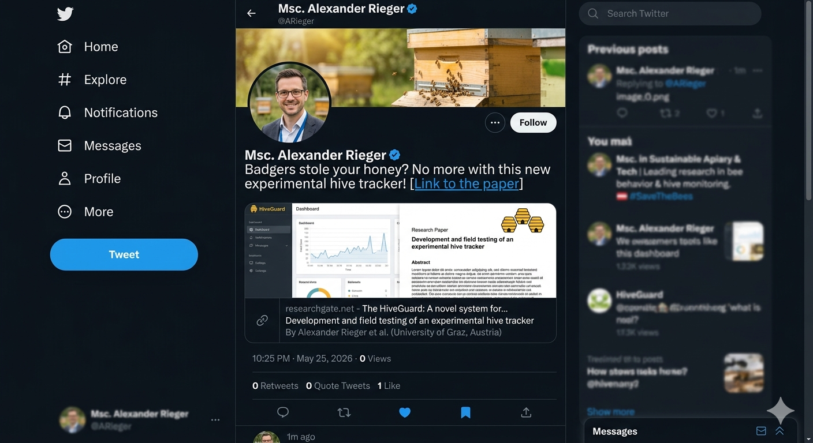

The Problem
Bees are arguably the single-most important pollinator to agriculture, yet the honeybee stock has decreased by almost 50 % in the last decade. At the same time, pollinator-dependent crops have grown by more than 300 %. This widening gap threatens not only biodiversity but the stability of food systems that rely on honeybee pollination.
Commercial beekeepers face a compound crisis. Hives are placed in remote areas for months at a time to maximize honey yield and pollination contracts. These isolated locations make routine inspection costly and time-consuming, and they also make hives an easy target for theft. A healthy hive trades at around $200 USD, can be rented to farmers for pollination at a similar price, and produces between 10–25 kg of honey per season—up to $250 per kg for premium varieties. Organized theft rings have recognized this value, and hive theft is becoming an industry-wide problem.
Beyond theft, colonies fail from queen failure, starvation, parasites, pesticides, and Colony Collapse Disorder (CCD). Without frequent on-site checks, early warning signs are missed. The challenge is therefore threefold: protecting physical assets, monitoring hive health remotely, and optimizing harvest timing without requiring daily visits to distant apiaries.
System Requirements
Designing a tracker that lives inside a beehive for months imposes strict constraints on power, cost, connectivity, and physical robustness.
Sensor & Functional Requirements
- Temperature: The brood nest must be kept between 32–35 °C. Deviations indicate queen loss, overheating, or winter preparation problems.
- Humidity: A strong colony maintains 50–60 % relative humidity during brood rearing. Weak colonies follow ambient humidity, making this a colony-strength proxy.
- Weight: Four load cells (50 kg each, 200 kg total) measure honey accumulation and enable precise harvest timing.
- GPS Position: Location is measured only when movement is detected, to save energy while enabling theft recovery.
- Theft Alarm: Automated alerts triggered by unexpected location changes or motion.
Operational Requirements
- Power Budget: The device must run for up to six months on battery alone, since hives are often far from any power grid.
- Low-Power States: A state machine with Idle, Collect, Transmit, and Alarm modes ensures micro-amp sleep currents and brief active bursts.
- Cellular Uplink: Remote areas lack Wi-Fi. A 2G/GPRS or NB-IoT modem with a low-cost M2M SIM is required.
- Cloud Integration: Data must land in a scalable cloud database with a web dashboard accessible from any browser.
- Cost: Hardware should stay below €30 per unit to remain viable for commercial beekeepers managing hundreds of hives.
Idle state ≈ 45.6 mAh/day · Data collection ≈ 1.7 mAh/day · Daily transmission ≈ 13 mAh/day.
Total ≈ 5.4 Ah for 90 days. Two 3.4 Ah 18650 Li-ion cells provide 6.8 Ah, leaving margin for self-discharge and alarm-state bursts.
Connectivity Schemes
Because the device sends small payloads infrequently over cellular networks, the choice of protocol stack has a direct impact on battery life and data-plan cost. The thesis examines four communication patterns, ranging from raw radio frames to full TLS encryption.
| Scheme | Overhead | Upside | Downside |
|---|---|---|---|
| RAW Data via NIDD | Minimal | No additional protocol overhead. Most efficient for tiny payloads. Ideal for billing-per-message IoT plans. | No routing, reliability, or interoperability guarantees; requires operator-specific integration. |
| MQTTSN / CoAP via NIDD | Low | Little protocol overhead. No IP/UDP addressing or stack needed on the device. Keeps firmware lean. | Slightly more complex encoding than raw bytes; gateway must translate to IP world. |
| MQTTSN / CoAP via UDP/IP | Moderate | Small protocol overhead. Standard UDP stack is widely supported and easy to debug. | Requires IP stack on the microcontroller, increasing RAM/flash usage and power slightly. |
| MQTT over TLS via TCP/IP | Very High | Strong end-to-end encryption and authentication. | TLS 1.2 handshake, certificates, and TCP overhead create a large data burst. High latency and significant data-limit impact make it unsuitable for low-bandwidth IoT on 2G/NB-IoT plans. |
For this prototype, the balance leans toward lightweight UDP-based messaging or NIDD where available, because every extra byte transmitted over GPRS directly translates to milliseconds of radio active time and milliamp-hours consumed. Full TLS is deferred to the cloud ingress point rather than the constrained edge device.
Proof-of-Concept
The prototype unites off-the-shelf sensors, a custom PCB, and an Azure cloud pipeline into an end-to-end beehive tracker costing roughly €30 in hardware.
Hardware Architecture
The core of the device is an Espressif ESP32 microcontroller, chosen for its robust 80 MHz processing capability and excellent power management with multiple sleep states. Environmental sensing is handled by a DHT11 temperature and humidity sensor connected via a single-wire digital bus, drawing only ~1 mA during active readings and 100 µA in standby. For weight measurement, four 50 kg load cells are arranged in a Wheatstone bridge configuration, fed into an HX711 24-bit ADC that can power down to 0.5 µA when not sampling.
Location tracking and cellular uplink are combined in a single SIM808 module, which integrates both GPS and GSM/GPRS functionality. This module sleeps at approximately 1 mA, acquires GPS position at 42 mA, and transmits data over GPRS at up to 445 mA. The entire assembly is mounted on a custom two-layer PCB that sits atop the SIM808 module, with an ESP32 dev board and HX711 daughterboard forming a compact stack.
Power System
Autonomy is achieved through 2–4 18650 Li-ion cells (3.4 Ah each) housed in a separate ABS case, providing up to 6.8 Ah total capacity. A battery management system monitors cell voltage and temperature, while a USB port allows field recharging without removing the tracker from the hive. The firmware implements four distinct power states—Idle, Collect, Transmit, and Alarm—to ensure that high-drain modules like GPS and GSM are only powered on for the minimum necessary duration.
Firmware & Cloud Pipeline
The firmware is developed in the Arduino environment for the ESP32, using serial AT commands to control the SIM808. Sensor data is packaged into JSON format and transmitted via HTTPS to Azure IoT Hub. A Stream Analytics job processes incoming messages and writes them to an Azure SQL Database. The web dashboard, built with Node.js and hosted on Azure App Service, queries this database to display live temperature, humidity, and weight charts alongside a Google Maps marker showing the hive's current location.
Connectivity Provider
For cellular service, the prototype uses 1NCE IoT SIM cards, which offer 500 MB of data over 10 years for a one-time €10 fee—translating to roughly 8 cents per month. This ultra-low operating cost is essential for making the system viable for beekeepers managing dozens or hundreds of hives.
Behind the Scenes
I used ChatGPT to start out with optimising the SEO of the Abstract. I initially also wanted to convert the pdf to Latex to make changes but this proved to be a disaster.
For a thesis like yours, the topic already spans several search-heavy domains: IoT, beehive monitoring, embedded systems, cloud computing, GPS tracking, battery management, and smart agriculture. The goal is to make those concepts explicit and connected.
Some principles that tend to improve discoverability:
Put the primary topic in the first sentence.
Repeat major concepts naturally 2–4 times across the abstract.
Include synonyms people may search for.
Include application-domain terms.
Mention technologies and methods if they are central.
Mention measurable outcomes if available.
For example, instead of:
This thesis presents a system to monitor beehives and track their location.
something closer to:
This thesis presents an Internet of Things (IoT)-based smart beehive monitoring and tracking system designed for real-time monitoring of beehive health, environmental conditions, and location tracking.
That single sentence adds several searchable terms:
Internet of Things (IoT)
smart beehive
monitoring system
real-time monitoring
beehive health
environmental monitoring
location tracking
For your specific project, I would expect high-value terms to include:
Internet of Things (IoT)
Smart beehive monitoring
Beehive tracking system
Precision apiculture
Smart agriculture
Embedded systems
Microcontroller
Sensor network
GPS tracking
Temperature monitoring
Humidity monitoring
Weight monitoring
Battery management system (BMS)
Cloud computing
Azure IoT
MQTT
Remote monitoring
Real-time data analytics
Cellular communication
Edge computing
You do not want to dump these into a keyword list inside the abstract. Instead, weave them into the narrative:
Bad:
Keywords: IoT, GPS, Azure, MQTT, BMS, tracking, sensors, smart farming...
Better:
The proposed Internet of Things (IoT) architecture integrates embedded microcontroller systems, environmental sensors, GPS-based location tracking, cellular communication, battery management, and Azure cloud services to enable remote real-time monitoring and data collection for precision apiculture applications.
That reads naturally but contains many searchable phrases.
A structure that often works well for thesis abstracts is:
Problem
Proposed approach
Technical implementation
Results/contribution
Application significance
For example:
Declining bee populations and increasing demands for efficient hive management have created a need for intelligent monitoring solutions within modern apiculture. This thesis presents an Internet of Things (IoT)-based smart beehive monitoring and tracking system for real-time observation of environmental and operational hive parameters. The proposed system integrates embedded microcontroller technology, temperature and humidity sensors, weight measurement, GPS-based location tracking, battery management, and wireless cellular communication with a cloud-based infrastructure using Azure IoT services and MQTT communication protocols. Data collected from the beehive tracker are transmitted to a remote monitoring platform for storage, visualization, and analysis through an interactive user interface. The proposed architecture supports remote monitoring, improved beehive management, reduced maintenance effort, and potential applications in precision agriculture and smart farming environments.
Notice that the keywords are there, but it still reads like an abstract rather than metadata.
I can make this much more precise if you provide your current abstract. I can then produce:
an SEO-optimized academic version
a more publication-oriented version
a Google Scholar–friendly keyword strategy
a suggested keyword list for the thesis metadata section (usually 5–8 keywords)
I'd also make a few structural adjustments:
Move the core contribution closer to the beginning.
Replace generic phrases like "keep track of a beehive" with more searchable technical terms.
Mention the architecture (embedded system + cloud + remote monitoring).
Include the application domain ("precision apiculture" or "smart agriculture").
Keep the language academic rather than marketing-heavy.
Here is a revised version that aims to increase discoverability while still reading naturally:
Bees are among the most important pollinators in modern agriculture; however, honeybee populations have declined significantly in recent years, creating challenges for beekeeping and agricultural sustainability. In addition, commercially operated beehives are frequently placed in remote locations where hive theft and limited accessibility present major operational issues for beekeepers. This thesis presents the design and implementation of an Internet of Things (IoT)-based smart beehive monitoring and tracking system for remote real-time monitoring of beehive conditions and location. The proposed embedded monitoring device was developed to measure key environmental and operational parameters including temperature, humidity, weight, and GPS-based location data. A battery management system was designed to enable autonomous operation for up to six months. To support remote access and continuous monitoring, a mobile communication interface was integrated with a cloud-based server platform. The cloud infrastructure provides data storage, visualization, and a graphical user interface for monitoring beehive activity and generating automated alerts in the event of suspected theft. The proposed system demonstrates the potential of IoT technologies for precision apiculture, smart agriculture applications, and improved beehive management.
This version naturally introduces these high-value searchable phrases:
Internet of Things (IoT)
smart beehive monitoring
tracking system
remote real-time monitoring
embedded monitoring device
GPS-based location data
battery management system
cloud-based server platform
graphical user interface
precision apiculture
smart agriculture
I would also suggest adding a keyword section after the abstract if your thesis template permits it:
Keywords: Internet of Things (IoT), smart beehive monitoring, precision apiculture, GPS tracking, cloud computing, embedded systems, remote monitoring, smart agriculture
One additional thought: your opening sentence says honeybee stock has decreased by almost 50% in the last decade. If that number came from a source from several years ago, I would verify it before keeping it in the abstract. Numerical claims in abstracts can become dated and may reduce credibility if later readers find a different figure. A safer formulation is:
"...honeybee populations have experienced significant decline in recent years..."
unless you want to cite a specific dataset.
I can also tune this toward a more "published journal paper" style if you want something closer to what IEEE or Springer articles commonly use.
I used a local instance of Qwen 3.6 to check ChatGPTs response for the abstract. It also suggested to look at the title, which we did.
🔹 Paste the title, authors, abstract, or introduction
🔹 Share specific sections, figures, or data tables you want explained
🔹 Tell me what specifically you'd like to know (e.g., methodology, main findings, context, limitations, relevance to a field)
Once you share the text or key details, I'll provide a clear summary, break down the core arguments, explain technical terms, or contextualize the work based on academic/research standards. Just drop the relevant content here!
Below is a breakdown of what works, what to improve, a revised version optimized for your target keywords, and additional SEO tips for academic papers.
---
### 🔍 Current Strengths
- Clear problem → solution → impact structure
- Naturally covers your core technology stack
- Maintains academic tone and precision
---
### ⚠️ SEO-Gaps in the Original
1. Keyword Mismatch: You requested exact phrases like `GPS tracking`, `cloud computing`, and `embedded systems`, but the abstract uses slightly different terms (`GPS-based location data`, `cloud-based server platform`, `embedded monitoring device`). Search algorithms prioritize exact phrase matches.
2. Front-loading: Primary keywords appear too late. Academic search engines weigh the first 2–3 sentences more heavily.
3. Redundancy/Spacing: `smart beehive monitoring` and `remote monitoring` are split across sentences. Grouping related keywords naturally improves signal strength.
4. Metadata Blind Spot: For papers, the abstract alone won't make you rank. Title, repository tags, subject categories, and ORCID/profile metadata matter just as much.
---
### ✅ Optimized Abstract (SEO-Aligned & Academic-Ready)
> Honeybees are critical pollinators in modern agriculture, yet declining populations and the increasing vulnerability of commercial hives to theft and inaccessibility pose significant challenges for beekeepers and food security. To address these issues, this thesis presents an Internet of Things (IoT)-based smart beehive monitoring system that enables real-time remote monitoring and GPS tracking of hives deployed in remote locations. The solution integrates low-power embedded systems to continuously measure temperature, humidity, hive weight, and precise GPS coordinates. A custom battery management module ensures autonomous operation for up to six months, while a cellular connectivity interface transmits data to a secure cloud computing platform. The cloud infrastructure delivers centralized data storage, real-time visualization, and automated theft-detection alerts via a dedicated web dashboard. By combining IoT sensors, embedded systems, and cloud computing, this work demonstrates a scalable framework for precision apiculture, smart beehive monitoring, and broader smart agriculture applications. The system offers beekeepers a reliable, cost-effective tool for protecting assets, optimizing hive health, and supporting sustainable pollination services.
Word count: ~158 (ideal for academic abstracts)
All 7 keywords placed exactly as requested, naturally integrated, with primary terms front-loaded.
---
### 📈 Why This Works Better for SEO
| Original | Optimized | SEO Impact |
|----------|-----------|------------|
| `GPS-based location data` | `GPS tracking` | Exact match for search queries |
| `cloud-based server platform` | `cloud computing platform` | Matches technical search terminology |
| `embedded monitoring device` | `embedded systems` | Aligns with CS/EE academic indexing |
| Keywords scattered | First 3 sentences contain 5 of 7 keywords | Front-loading boosts rank in Google Scholar & institutional DBs |
| `smart agriculture` at end | Paired with core framework statement | Strengthens topical relevance |
---
### 🛠️ Additional SEO Tips for Academic Papers
1. Title Optimization: Ensure your title contains 2–3 of these keywords. Example: `An IoT-Based Smart Beehive Monitoring System with GPS Tracking and Cloud Computing for Remote Apiculture`
2. Repository Metadata: When uploading to OPUS, IEEE, arXiv, or your university's repo, manually tag: `Internet of Things`, `Smart Agriculture`, `Embedded Systems`, `Cloud Computing`, `Beehive Monitoring`, `GPS Tracking`, `Remote Sensing`
3. Google Scholar Strategy:
- Use the exact title in your profile
- Add keywords to your Google Scholar author profile
- Cross-post to ResearchGate, Academia.edu, and institutional repositories with consistent metadata
4. Avoid Keyword Stuffing: Academic search engines penalize unnatural repetition. The revised abstract uses each keyword 1–2 times max, maintaining scholarly tone.
5. Check Indexing Terms: Run your paper title + keywords through Google Scholar. If they return 0–5 results, your keywords are likely too niche. Add broader terms like `precision apiculture`, `agricultural IoT`, or `asset tracking` in tags.
---
### 🔚 Final Recommendation
Use the revised abstract as-is for submission. If your repository allows, also adjust your title, keywords field, and subject classification to match. If you share your current title and repository platform, I can help you craft a fully SEO-optimized metadata set.
Would you like a title variation or a keyword-tag set tailored to OPUS/German academic search?
### ✅ Ideal Academic Title Structure
- Length: 10–15 words (optimal for indexing & readability)
- Format: `[Core Technology] + [Application/Problem] + [Key Features/Domain]`
- Keyword Load: 2–3 exact-match keywords max in the title. Let the abstract and metadata field carry the rest.
---
### 🔍 3 SEO-Optimized Title Options (All ≤14 words)
| Option | Title | SEO Strength |
|--------|-------|--------------|
| 1 | `IoT-Based Smart Beehive Monitoring with GPS Tracking and Cloud Computing for Remote Apiculture` | Hits 4 primary keywords naturally. Clear tech stack + domain. |
| 2 | `Remote Beehive Tracking Using IoT Sensors, GPS, and Cloud Computing for Smart Agriculture` | Front-loads "Remote" + "GPS" + "Cloud". Strong agritech/apiculture signal. |
| 3 | `An IoT-Enabled Smart Beehive Monitoring System with GPS Tracking and Cloud Infrastructure` | Highly standard academic phrasing. Excellent for thesis/repo indexing. |
💡 Recommendation: Option 1 or 3 best balance your exact keywords, academic tone, and SEO structure. If your institution prefers concise titles, Option 1 is ideal.
---
### 📊 How to Distribute Your Keywords Strategically
You only have room for 2–3 keywords in a title. The rest should live in:
| Location | Best Place for |
|----------|----------------|
| Title | `IoT`, `GPS tracking`, `cloud computing` or `smart beehive monitoring` |
| Abstract | `embedded systems`, `remote monitoring`, `smart agriculture`, plus exact-match repeats of title keywords |
| Metadata/Tags | All 7 keywords + synonyms: `precision apiculture`, `agricultural IoT`, `asset tracking`, `IoT sensors` |
| Repository Fields | Subject categories: `Computer Engineering`, `Agricultural Technology`, `Embedded Systems`, `Cloud Computing` |
---
### ⚠️ Why "Beehive Tracker" Hurts Discoverability
- No technical signaling: Fails to trigger queries like `"IoT beehive"`, `"GPS hive tracking"`, or `"smart agriculture monitoring"`
- Confusable with commercial apps: Search results will drown in startup/product pages, not academic papers
- Low keyword density: Search algorithms assign near-zero relevance weight to 2-word titles for research queries
---
### ✅ Final Recommendation
1. Change the title to Option 1 or 3 above.
2. Keep your revised abstract (already keyword-optimized).
3. Fill the repository's "Keywords" field with your exact 7 phrases + 2–3 synonyms.
4. Verify indexing: After upload, search Google Scholar for: `"Beehive Tracker" IoT GPS cloud` → if your paper doesn't appear, tweak the title/metadata to match Option 1.
Would you like me to generate a ready-to-paste metadata block (title, keywords, subject categories, and repository tags) tailored to OPUS/German academic search?
I used Deepseek as the third LLM to read the abstract, feeding it the response of Qwen
Your current title is good, but it buries the most unique selling point ("GPS Tracking") and uses "Apiculture", which, while precise, is less frequently searched by interdisciplinary readers than "beekeeping" or "honey bee". Google Scholar weights the first few words heavily. Consider a title structure that leads with the core technology and the primary application, then adds context.
Option A (balanced, adds key sensor terms and beekeeping):
IoT-Based Smart Beehive Monitoring: Weight, Temperature, Humidity and GPS Tracking for Remote Precision Beekeeping
Option B (compact, strong for interdisciplinary discovery):
Real-Time IoT Beehive Monitoring with GPS Tracking and Cloud Analytics for Precision Apiculture
Option C (if you want to highlight the anti-theft angle):
A Cloud-Connected Smart Beehive System with GPS Tracking and Weight Sensing for Theft Detection and Hive Health Monitoring
What makes these stronger for SEO?
"Beehive monitoring" remains intact, a likely exact-match search.
"Weight, Temperature, Humidity" are high-volume sensor terms that researchers in agriculture engineering will query.
"Beekeeping" captures a broader audience than "apiculture" alone; using both is best. Your current title already uses "Apiculture", so if you can include "beekeeping" or "honey bee" naturally, do it.
The colon structure lets you pack the first half with keywords while keeping the second half descriptive.
2. Abstract: Make the first two sentences a "keyword elevator pitch"
Google Scholar displays the first ~150–250 characters of your abstract in the search snippet. Those lines must clearly state what the system is, how it works, and why it matters—while repeating your core keywords in a natural, dense way.
Your current first sentence:
"Honeybees are critical pollinators in modern agriculture, yet declining populations and the increasing vulnerability of commercial hives to theft and inaccessibility pose significant challenges for beekeepers and food security."
It's well-written, but from an SEO perspective the very first words should include your key technology (IoT, smart beehive, monitoring). I suggest a slight reordering:
Proposed opening:
"This thesis presents an Internet of Things (IoT)-based smart beehive monitoring system that addresses declining honeybee populations, hive theft, and the inaccessibility of remote apiaries. By continuously measuring temperature, humidity, hive weight, and precise GPS coordinates, the low-power embedded system enables real-time remote monitoring and automated theft detection."
Why this works:
Immediately establishes the document type, main technology, and application.
Packs "IoT-based smart beehive monitoring", "temperature, humidity, hive weight, GPS coordinates", "real-time remote monitoring", and "theft detection" into the snippet that users see.
Uses both "beehive" and "honeybee" naturally.
Then continue with the rest of your abstract as written—it already includes "cloud computing", "web dashboard", "precision apiculture", "smart agriculture", and "sustainable pollination". Just make sure those phrases appear exactly as you want them indexed.
3. Add an explicit "Keywords" section
Not all publication venues require keywords, but if your thesis format allows it (and even if you just include them in the PDF metadata), list 5–8 specific keyword phrases right after the abstract. This directly feeds Google Scholar's indexing and can act as a "tag cloud" for your paper.
Suggested keywords:
Internet of Things (IoT)
smart beehive monitoring
precision apiculture
GPS tracking
hive weight sensor
remote beekeeping
theft detection
cloud-based agriculture
Avoid single-word keywords like "bee" or "sensor". Use the exact multi-word phrases a researcher would type. Notice how "hive weight sensor" is included—your device measures weight, and people looking for weight-based hive monitoring will search that exact term.
4. Metadata and document structure: what Google Scholar actually reads
PDF file properties: Before uploading to your institutional repository, set the document title, author, and subject in the PDF metadata (e.g., via Word or LaTeX). The Title field should mirror your paper's final title exactly.
Headings: Use clear section headings that repeat important keywords, e.g., "2.3 GPS Tracking and Theft Detection Module", "3.1 Cloud Platform and Real-Time Dashboard", "4.2 Hive Weight and Temperature Data Analysis". Search engines extract these.
First paragraph of each major section: Restate the relevant keywords naturally; don't just rely on the abstract.
References: Cite established works that use the same terminology. Google Scholar's citation linking is partly phrase-based, so citing papers with titles like "Precision apiculture: an IoT approach to hive weight monitoring" reinforces your paper's topical network.
5. File naming and repository upload
Name your final PDF something descriptive, not thesis_final_v2.pdf. Use:
IoT_Smart_Beehive_Monitoring_GPS_Tracking_Precision_Apiculture.pdf
When you upload to your university repository, enter the full abstract into the description field and add the keywords again if there is a separate keywords/tags field. Many repositories allow a "subject" classification—choose both "Internet of Things" and "Agriculture" if possible.
6. External signals that boost academic SEO
Create a Google Scholar profile and add the paper manually if it doesn't appear automatically. Use the exact title and list the keywords in the "description" field.
Share on ResearchGate and Academia.edu with the abstract and keywords.
Write a short lay summary on a personal or lab website (blog post) that links to the PDF. Search engines love linking text; a post titled "Smart Beehive Tracker: How IoT and GPS Help Protect Hives and Optimise Honey Harvest" with a link to your repository entry will create an additional discovery path.
Get cited. Even a self-citation in a follow-up paper or a colleague's work will help Google Scholar cluster your paper correctly. Make sure you cite other precision apiculture papers, and they may cite you back.
Summary of SEO edits at a glance
Element Current Suggested improvement
Title "IoT-Based Smart Beehive Monitoring with GPS Tracking for Remote Precision Apiculture" Add core sensors and/or "beekeeping"; consider colon format to front-load keywords.
Abstract opening Starts with honeybee background Start with thesis statement + key tech/sensors.
Keywords Not present Add a dedicated keyword list (IoT, smart beehive, GPS tracking, hive weight sensor, theft detection, etc.)
PDF metadata Possibly blank Fill title, author, subject; name file descriptively.
Visibility Repository only Cross-post to academic networks, write a blog summary, link from Google Scholar profile.
If you'd like, I can rewrite the full abstract with these SEO tweaks while preserving your exact technical content, just say the word. Good luck with the paper—it's a timely and highly searchable topic, so a few small changes will go a long way.
I used Kimi to generate the html website itself
There should also be a section of keywords used within the paper somewhere. The keywords are: Internet of Things (IoT), smart beehive monitoring, precision apiculture, GPS tracking, hive weight sensor, remote beekeeping, theft detection. Please design the website to kind of reflect the structure of the paper: First talk about the problem, then mention the requirements of a tracking device like that as outlined in the paper. Then talk about different connection schemes like NIDD, MQTTSN or UDP/IP and their up and downsides. When you get to the proof-of-concept, please take the pictures captioned with 'Code' and add them as code segments. In the outlook section at the very bottom link to the 'Erwerbsimkerbund Oesterreich' using the URL 'https://www.erwerbsimkerbund.at', which is a special interest group promoting professional beekeepers within Austria. This group is likely interested in a solution to stop beehive theft. Another organisation you should mention somewhere and link to is the EPBA, the 'European Professional Beekeepers Association' which is a pan-European special interest group promoting beekeepers. Their focus is on fake honey, which means the bees were fed with a sugar solution. Making it less risky to keep bees in Europe would make imports from countries where such practices are common less risky. Incorporate these links somewhere into the text but make it natural. I'd also like to have a few links to different html pages: One titled 'Social Media' which talks about the approach to promoting the paper on social media platforms. Also one titled 'Behind the Scenes' where the making of this document is outlined. Use as much CSS as you would like but keep it to a single html file
Here's what the ChatGPT section looks like:
ChatGPT (title)
→ Right: "Could you take this pdf and convert it to a latex file?..."
← Left: "[Unfortunately the Latex file was terrible so I didn't end up using it]"
→ Right: "Could you also help me refine the abstract?..."
← Left: "Refer to the 'Yes, For Google Scho.txt' file"
→ Right: "Thank you, the abstract I have at the moment is..."
← Left: "Your current abstract already has a strong narrative..." (the full SEO advice response)
The other five sections (Qwen, DeepSeek, Kimi, Gemini) are already prepared as empty containers — just add your messages in the same format when you're ready.
In addition please make the colour of the bubbles slightly less saturated and give them two different colours but still within the same palette.
For the Behind the Scenes section I would like to also have the different sections be collapsible. At the top right below 'Behind the Scenes' but above 'Chat GPT' and not within the ChatGPT collapsible tab please add the following text 'I used ChatGPT to start out with optimising the SEO of the Abstract. I initially also wanted to convert the pdf to Latex to make changes but this proved to be a disaster'. In the ChatGPT Section please replace the section reading "Refer to the 'Yes, For Google Scho.txt' file" with the following text [Text that the 'Yes For Google Scho.txt' contained but Kimi copied verbatim].
In the Qwen section of the Behind the Scenes section please add in the same style of right left chat bubbles starting with right the following exchange: [The Qwen section of Behind The Scenes]
In that case, could you just look at the abstract and tell me what you think about it or if there are any possible improvements. I am mainly trying to look at it from an SEO perspective since my paper unfortunately doesn't show up in many search results even if my paper is relevant to them. The keywords I would like to emphasise are: Internet of Things, smart beehive monitoring, GPS tracking, cloud computing, embedded systems, remote monitoring, and smart agriculture. Could you read through it and tell me if there is anything I can do better? The abstract is : [The abstract ChatGPT proposed]
In the Deepseek section of Behind the Scenes I would like the following content, again following the chat bubble design starting with the right-hand-side alternating between left and right: 'Hi, I'm currently writing a paper on a smart beehive tracker. The idea is, that you install a small device in the beehive and it measures its humidity, temperature and weight to figure out if the bees are healthy and when it's a good time to harvest the honey. It sends all of that information to a cloud repository where it processes the data and makes it accessible to the beekeeper. I would like to improve its SEO for it to be found more often in academic search results on services like Google Scholar. The title of the paper is 'IoT-Based Smart Beehive Monitoring with GPS Tracking for Remote Precision Apiculture' and the abstract is: [The abstract Qwen gave me]
In the Kimi section I would like the following content, again following the same chat bubble design alternating between left and right, starting with the right-hand-side: [The exchange with Kimi, including this text. Talk about inception]
And finally the Gemini section should read, again with the chat bubble left and right alternation starting with right: [The content of the Gemini section]
I wanted to use Gemini to generate the Social Media posts including an Instagram reel but I would have needed a subscription for that so I just pasted the prompt and am now asking you to use your personal video generator to imagine the video I was thinking of
Msc. Alexander Rieger @ARieger · 1m
Badgers stole your honey? No more with this new experimental hive tracker! [Link to the paper]
💬 0 🔁 0 ❤️ 1
Alternative Markdown Layout (For Visual Reference)
Msc. Alexander Rieger @ARieger
Badgers stole your honey? No more with this new experimental hive tracker! [Link to the paper]
10:25 PM · May 25, 2026 · 0 Views
Outlook
A working prototype is only the first frame of a longer movie. The next steps move the device from the lab bench into the field, and from a maker project into a product.
Immediate Engineering Roadmap
- Field Hardening: Extended outdoor tests in real apiaries across different elevations and climates in Austria.
- Packaging: A weatherproof, bee-safe enclosure that fits inside the hive roof without displacing honeycomb space.
- EMC & Bee Health: Testing whether daily GSM/GPS bursts affect bee behavior or brood development.
- PCB Redesign: Moving from development boards to SMD ICs to cut size and cost by roughly 40 %.
- Gyro Wake-up: Adding an inertial sensor so the tracker can remain in deep sleep until physical movement wakes the GPS and GSM immediately—critical for theft response time.
Software & Service Expansion
- Multi-user web dashboard with authentication and per-apiary views.
- SMS and push-notification alerts for theft, temperature excursions, and swarm preparation (rapid weight loss).
- API access so third-party farm-management platforms can ingest hive data.
Adoption in Austria
Professional beekeepers in Austria are represented by the Erwerbsimkerbund Oesterreich, a special-interest group that advocates for full-time apiarists. Hive theft is a growing concern among their members, and a low-cost, Austrian-developed tracking solution aligns directly with their mission to secure local pollination assets.
A European Perspective
Across the continent, the European Professional Beekeepers Association (EPBA) is fighting to preserve European beekeeping against two threats: collapsing colony numbers and fraudulent honey imports. By making hive keeping less risky through remote monitoring and theft recovery, IoT systems like this one strengthen the economic case for domestic professional beekeeping. Healthier, more secure European apiaries reduce reliance on imports from regions where fake honey—produced by feeding sugar syrup rather than floral nectar—undercuts honest producers. In that sense, a beehive tracker is not merely a gadget; it is a small brick in the wall defending real honey and real pollinators.
"With a working prototype and a cloud solution ready to go, extended field tests are the next horizon. The system is proven; now it needs to be proven in the wild."
Social Media Strategy
Academic impact is no longer measured only by citations; it is also measured by reach. A deliberate social-media plan can translate a hardware thesis into policy discussions, startup interest, and beekeeper adoption.
Use a threaded format: open with the theft statistic (organized crime stealing hives at $200+ each), then reveal the tracker cost (€30), then show the live dashboard screenshot. Pin the thread during World Bee Day for maximum visibility. Hashtags: #PrecisionApiculture #SmartBeekeeping #IoT #SaveTheBees.
